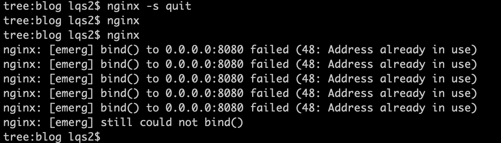

<!DOCTYPE html>
<html lang="zh-CN" class="loading">
<head><meta name="generator" content="Hexo 3.8.0">
    <meta charset="UTF-8">
    <meta http-equiv="X-UA-Compatible" content="IE=edge,chrome=1">
    <meta name="viewport" content="width=device-width, minimum-scale=1.0, maximum-scale=1.0, user-scalable=no">
    <title>TreeLiked @lss</title>

    <meta name="apple-mobile-web-app-capable" content="yes">
    <meta name="apple-mobile-web-app-status-bar-style" content="black-translucent">
    <meta name="google" content="notranslate">
    <meta name="keywords" content="treeliked,"> 
    <meta name="description" content="我还可以见到她，这不算传统意义上的离别。
"> 
    <meta name="author" content="lss"> 
    <link rel="alternative" href="atom.xml" title="TreeLiked @lss" type="application/atom+xml"> 
    <link rel="icon" href="/TreeLiked.github.io/img/favicon.png"> 
    <link rel="stylesheet" href="//cdn.jsdelivr.net/npm/gitalk@1/dist/gitalk.css">
    <link rel="stylesheet" href="/TreeLiked.github.io/css/diaspora.css">
</head>
</html>
<body class="loading">
    <div id="loader"></div>
    <div id="single">
    <div id="top" style="display: block;">
    <div class="bar" style="width: 0;"></div>
    <a class="icon-home image-icon" href="javascript:;"></a>
    <div title="播放/暂停" class="icon-play"></div>
    <h3 class="subtitle">11月20日在线课程Http协议学习总结</h3>
    <div class="social">
        <!--<div class="like-icon">-->
            <!--<a href="javascript:;" class="likeThis active"><span class="icon-like"></span><span class="count">76</span></a>-->
        <!--</div>-->
        <div>
            <div class="share">
                <a title="获取二维码" class="icon-scan" href="javascript:;"></a>
            </div>
            <div id="qr"></div>
        </div>
    </div>
    <div class="scrollbar"></div>
</div>
    <div class="section">
        <div class="article">
    <div class="main">
        <h1 class="title">11月20日在线课程Http协议学习总结</h1>
        <div class="stuff">
            <span>十一月 24, 2018</span>
            
  <ul class="post-tags-list"><li class="post-tags-list-item"><a class="post-tags-list-link" href="/TreeLiked.github.io/tags/bmatch/">bmatch</a></li><li class="post-tags-list-item"><a class="post-tags-list-link" href="/TreeLiked.github.io/tags/http/">http</a></li></ul>


        </div>
        <div class="content markdown">
            <blockquote>
<p>由于上课原因，没能看到直播，十分难受，今天看了录播，交个作业给焦哥～今晚一定不能错过！！！</p>
</blockquote>
<h2 id="学习总结"><a href="#学习总结" class="headerlink" title="学习总结"></a>学习总结</h2><h4 id="学到了什么"><a href="#学到了什么" class="headerlink" title="学到了什么"></a>学到了什么</h4><ul>
<li>nginx 的使用，以及基础的一些配置</li>
<li>虽然学习过http协议，但是这节课学到了更多的内容，特别是有关<code>url</code>中有关锚的知识</li>
<li>仔细研究了hexo博客框架的使用，搭建了一个个人博客<a href="https://ineffable.page" title="treeliked" target="_blank" rel="noopener">treeliked</a></li>
</ul>
<h4 id="重点难点"><a href="#重点难点" class="headerlink" title="重点难点"></a>重点难点</h4><ul>
<li>nginx 的配置文件可以很简单，但是也可以很复杂，所以要慢慢来配置</li>
</ul>
<h2 id="nginx"><a href="#nginx" class="headerlink" title="nginx"></a>nginx</h2><h4 id="运行命令"><a href="#运行命令" class="headerlink" title="运行命令"></a>运行命令</h4><figure class="highlight bash"><table><tr><td class="gutter"><pre><span class="line">1</span><br><span class="line">2</span><br><span class="line">3</span><br><span class="line">4</span><br><span class="line">5</span><br><span class="line">6</span><br><span class="line">7</span><br><span class="line">8</span><br><span class="line">9</span><br></pre></td><td class="code"><pre><span class="line">tree:blog lqs2$ nginx -s quit</span><br><span class="line">tree:blog lqs2$ nginx</span><br><span class="line">tree:blog lqs2$ nginx</span><br><span class="line">nginx: [emerg] <span class="built_in">bind</span>() to 0.0.0.0:8080 failed (48: Address already <span class="keyword">in</span> use)</span><br><span class="line">nginx: [emerg] <span class="built_in">bind</span>() to 0.0.0.0:8080 failed (48: Address already <span class="keyword">in</span> use)</span><br><span class="line">nginx: [emerg] <span class="built_in">bind</span>() to 0.0.0.0:8080 failed (48: Address already <span class="keyword">in</span> use)</span><br><span class="line">nginx: [emerg] <span class="built_in">bind</span>() to 0.0.0.0:8080 failed (48: Address already <span class="keyword">in</span> use)</span><br><span class="line">nginx: [emerg] <span class="built_in">bind</span>() to 0.0.0.0:8080 failed (48: Address already <span class="keyword">in</span> use)</span><br><span class="line">nginx: [emerg] still could not <span class="built_in">bind</span>()</span><br></pre></td></tr></table></figure>
<h4 id="命令截图"><a href="#命令截图" class="headerlink" title="命令截图"></a>命令截图</h4><p></p>
<h4 id="配置文件"><a href="#配置文件" class="headerlink" title="配置文件"></a>配置文件</h4><figure class="highlight plain"><table><tr><td class="gutter"><pre><span class="line">1</span><br><span class="line">2</span><br><span class="line">3</span><br><span class="line">4</span><br><span class="line">5</span><br><span class="line">6</span><br><span class="line">7</span><br><span class="line">8</span><br><span class="line">9</span><br><span class="line">10</span><br><span class="line">11</span><br><span class="line">12</span><br><span class="line">13</span><br><span class="line">14</span><br><span class="line">15</span><br><span class="line">16</span><br><span class="line">17</span><br><span class="line">18</span><br><span class="line">19</span><br><span class="line">20</span><br><span class="line">21</span><br><span class="line">22</span><br><span class="line">23</span><br><span class="line">24</span><br><span class="line">25</span><br><span class="line">26</span><br><span class="line">27</span><br><span class="line">28</span><br><span class="line">29</span><br><span class="line">30</span><br><span class="line">31</span><br><span class="line">32</span><br><span class="line">33</span><br><span class="line">34</span><br><span class="line">35</span><br><span class="line">36</span><br><span class="line">37</span><br><span class="line">38</span><br><span class="line">39</span><br><span class="line">40</span><br><span class="line">41</span><br><span class="line">42</span><br><span class="line">43</span><br><span class="line">44</span><br><span class="line">45</span><br><span class="line">46</span><br><span class="line">47</span><br><span class="line">48</span><br><span class="line">49</span><br><span class="line">50</span><br><span class="line">51</span><br><span class="line">52</span><br><span class="line">53</span><br><span class="line">54</span><br><span class="line">55</span><br><span class="line">56</span><br><span class="line">57</span><br><span class="line">58</span><br><span class="line">59</span><br><span class="line">60</span><br><span class="line">61</span><br><span class="line">62</span><br><span class="line">63</span><br><span class="line">64</span><br><span class="line">65</span><br><span class="line">66</span><br><span class="line">67</span><br><span class="line">68</span><br><span class="line">69</span><br><span class="line">70</span><br><span class="line">71</span><br><span class="line">72</span><br><span class="line">73</span><br><span class="line">74</span><br><span class="line">75</span><br><span class="line">76</span><br><span class="line">77</span><br><span class="line">78</span><br><span class="line">79</span><br><span class="line">80</span><br><span class="line">81</span><br><span class="line">82</span><br><span class="line">83</span><br><span class="line">84</span><br><span class="line">85</span><br><span class="line">86</span><br><span class="line">87</span><br><span class="line">88</span><br><span class="line">89</span><br><span class="line">90</span><br><span class="line">91</span><br><span class="line">92</span><br><span class="line">93</span><br><span class="line">94</span><br><span class="line">95</span><br><span class="line">96</span><br><span class="line">97</span><br><span class="line">98</span><br><span class="line">99</span><br><span class="line">100</span><br><span class="line">101</span><br><span class="line">102</span><br><span class="line">103</span><br><span class="line">104</span><br><span class="line">105</span><br><span class="line">106</span><br><span class="line">107</span><br><span class="line">108</span><br><span class="line">109</span><br><span class="line">110</span><br><span class="line">111</span><br><span class="line">112</span><br><span class="line">113</span><br><span class="line">114</span><br><span class="line">115</span><br><span class="line">116</span><br><span class="line">117</span><br><span class="line">118</span><br></pre></td><td class="code"><pre><span class="line"></span><br><span class="line">#user  nobody;</span><br><span class="line">worker_processes  1;</span><br><span class="line"></span><br><span class="line">#error_log  logs/error.log;</span><br><span class="line">#error_log  logs/error.log  notice;</span><br><span class="line">#error_log  logs/error.log  info;</span><br><span class="line"></span><br><span class="line">#pid        logs/nginx.pid;</span><br><span class="line"></span><br><span class="line"></span><br><span class="line">events &#123;</span><br><span class="line">    worker_connections  1024;</span><br><span class="line">&#125;</span><br><span class="line"></span><br><span class="line"></span><br><span class="line">http &#123;</span><br><span class="line">    include       mime.types;</span><br><span class="line">    default_type  application/octet-stream;</span><br><span class="line"></span><br><span class="line">    #log_format  main  &apos;$remote_addr - $remote_user [$time_local] &quot;$request&quot; &apos;</span><br><span class="line">    #                  &apos;$status $body_bytes_sent &quot;$http_referer&quot; &apos;</span><br><span class="line">    #                  &apos;&quot;$http_user_agent&quot; &quot;$http_x_forwarded_for&quot;&apos;;</span><br><span class="line"></span><br><span class="line">    #access_log  logs/access.log  main;</span><br><span class="line"></span><br><span class="line">    sendfile        on;</span><br><span class="line">    #tcp_nopush     on;</span><br><span class="line"></span><br><span class="line">    #keepalive_timeout  0;</span><br><span class="line">    keepalive_timeout  65;</span><br><span class="line"></span><br><span class="line">    #gzip  on;</span><br><span class="line"></span><br><span class="line">    server &#123;</span><br><span class="line">        listen       8080;</span><br><span class="line">        server_name  localhost;</span><br><span class="line"></span><br><span class="line">        #charset koi8-r;</span><br><span class="line"></span><br><span class="line">        #access_log  logs/host.access.log  main;</span><br><span class="line"></span><br><span class="line">        location / &#123;</span><br><span class="line">            root   html;</span><br><span class="line">            add_header treeliked lss;</span><br><span class="line">            index  index.html index.htm;</span><br><span class="line">        &#125;</span><br><span class="line"></span><br><span class="line">        #error_page  404              /404.html;</span><br><span class="line"></span><br><span class="line">        # redirect server error pages to the static page /50x.html</span><br><span class="line">        #</span><br><span class="line">        error_page   500 502 503 504  /50x.html;</span><br><span class="line">        location = /50x.html &#123;</span><br><span class="line">            root   html;</span><br><span class="line">        &#125;</span><br><span class="line"></span><br><span class="line">        # proxy the PHP scripts to Apache listening on 127.0.0.1:80</span><br><span class="line">        #</span><br><span class="line">        #location ~ \.php$ &#123;</span><br><span class="line">        #    proxy_pass   http://127.0.0.1;</span><br><span class="line">        #&#125;</span><br><span class="line"></span><br><span class="line">        # pass the PHP scripts to FastCGI server listening on 127.0.0.1:9000</span><br><span class="line">        #</span><br><span class="line">        #location ~ \.php$ &#123;</span><br><span class="line">        #    root           html;</span><br><span class="line">        #    fastcgi_pass   127.0.0.1:9000;</span><br><span class="line">        #    fastcgi_index  index.php;</span><br><span class="line">        #    fastcgi_param  SCRIPT_FILENAME  /scripts$fastcgi_script_name;</span><br><span class="line">        #    include        fastcgi_params;</span><br><span class="line">        #&#125;</span><br><span class="line"></span><br><span class="line">        # deny access to .htaccess files, if Apache&apos;s document root</span><br><span class="line">        # concurs with nginx&apos;s one</span><br><span class="line">        #</span><br><span class="line">        #location ~ /\.ht &#123;</span><br><span class="line">        #    deny  all;</span><br><span class="line">        #&#125;</span><br><span class="line">    &#125;</span><br><span class="line"></span><br><span class="line"></span><br><span class="line">    # another virtual host using mix of IP-, name-, and port-based configuration</span><br><span class="line">    #</span><br><span class="line">    #server &#123;</span><br><span class="line">    #    listen       8000;</span><br><span class="line">    #    listen       somename:8080;</span><br><span class="line">    #    server_name  somename  alias  another.alias;</span><br><span class="line"></span><br><span class="line">    #    location / &#123;</span><br><span class="line">    #        root   html;</span><br><span class="line">    #        index  index.html index.htm;</span><br><span class="line">    #    &#125;</span><br><span class="line">    #&#125;</span><br><span class="line"></span><br><span class="line"></span><br><span class="line">    # HTTPS server</span><br><span class="line">    #</span><br><span class="line">    #server &#123;</span><br><span class="line">    #    listen       443 ssl;</span><br><span class="line">    #    server_name  localhost;</span><br><span class="line"></span><br><span class="line">    #    ssl_certificate      cert.pem;</span><br><span class="line">    #    ssl_certificate_key  cert.key;</span><br><span class="line"></span><br><span class="line">    #    ssl_session_cache    shared:SSL:1m;</span><br><span class="line">    #    ssl_session_timeout  5m;</span><br><span class="line"></span><br><span class="line">    #    ssl_ciphers  HIGH:!aNULL:!MD5;</span><br><span class="line">    #    ssl_prefer_server_ciphers  on;</span><br><span class="line"></span><br><span class="line">    #    location / &#123;</span><br><span class="line">    #        root   html;</span><br><span class="line">    #        index  index.html index.htm;</span><br><span class="line">    #    &#125;</span><br><span class="line">    #&#125;</span><br><span class="line">    include servers/*;</span><br><span class="line">&#125;</span><br></pre></td></tr></table></figure>
<h4 id="网站截图"><a href="#网站截图" class="headerlink" title="网站截图"></a>网站截图</h4><ul>
<li>见此页面</li>
</ul>

            <!--[if lt IE 9]><script>document.createElement('audio');</script><![endif]-->
            <audio id="audio" loop="1" preload="auto" controls="controls" data-autoplay="false">
                <source type="audio/mpeg" src="">
            </audio>
            
                <ul id="audio-list" style="display:none">
                    
                        <li title="0" data-url="http://link.hhtjim.com/163/5146554.mp3"></li>
                    
                        <li title="1" data-url="http://link.hhtjim.com/qq/001faIUs4M2zna.mp3"></li>
                    
                </ul>
            
        </div>
        
    <div id="gitalk-container" class="comment link" data-ae="true" data-ci="" data-cs="" data-r="" data-o="" data-a="" data-d="false">查看评论</div>


    </div>
    
</div>


    </div>
</div>
</body>
<script src="//cdn.jsdelivr.net/npm/gitalk@1/dist/gitalk.min.js"></script>
<script src="//lib.baomitu.com/jquery/1.8.3/jquery.min.js"></script>
<script src="/TreeLiked.github.io/js/plugin.js"></script>
<script src="/TreeLiked.github.io/js/diaspora.js"></script>
<link rel="stylesheet" href="/TreeLiked.github.io/photoswipe/photoswipe.css">
<link rel="stylesheet" href="/TreeLiked.github.io/photoswipe/default-skin/default-skin.css">
<script src="/TreeLiked.github.io/photoswipe/photoswipe.min.js"></script>
<script src="/TreeLiked.github.io/photoswipe/photoswipe-ui-default.min.js"></script>

<!-- Root element of PhotoSwipe. Must have class pswp. -->
<div class="pswp" tabindex="-1" role="dialog" aria-hidden="true">
    <!-- Background of PhotoSwipe. 
         It's a separate element as animating opacity is faster than rgba(). -->
    <div class="pswp__bg"></div>
    <!-- Slides wrapper with overflow:hidden. -->
    <div class="pswp__scroll-wrap">
        <!-- Container that holds slides. 
            PhotoSwipe keeps only 3 of them in the DOM to save memory.
            Don't modify these 3 pswp__item elements, data is added later on. -->
        <div class="pswp__container">
            <div class="pswp__item"></div>
            <div class="pswp__item"></div>
            <div class="pswp__item"></div>
        </div>
        <!-- Default (PhotoSwipeUI_Default) interface on top of sliding area. Can be changed. -->
        <div class="pswp__ui pswp__ui--hidden">
            <div class="pswp__top-bar">
                <!--  Controls are self-explanatory. Order can be changed. -->
                <div class="pswp__counter"></div>
                <button class="pswp__button pswp__button--close" title="Close (Esc)"></button>
                <button class="pswp__button pswp__button--share" title="Share"></button>
                <button class="pswp__button pswp__button--fs" title="Toggle fullscreen"></button>
                <button class="pswp__button pswp__button--zoom" title="Zoom in/out"></button>
                <!-- Preloader demo http://codepen.io/dimsemenov/pen/yyBWoR -->
                <!-- element will get class pswp__preloader--active when preloader is running -->
                <div class="pswp__preloader">
                    <div class="pswp__preloader__icn">
                      <div class="pswp__preloader__cut">
                        <div class="pswp__preloader__donut"></div>
                      </div>
                    </div>
                </div>
            </div>
            <div class="pswp__share-modal pswp__share-modal--hidden pswp__single-tap">
                <div class="pswp__share-tooltip"></div> 
            </div>
            <button class="pswp__button pswp__button--arrow--left" title="Previous (arrow left)">
            </button>
            <button class="pswp__button pswp__button--arrow--right" title="Next (arrow right)">
            </button>
            <div class="pswp__caption">
                <div class="pswp__caption__center"></div>
            </div>
        </div>
    </div>
</div>


</html>